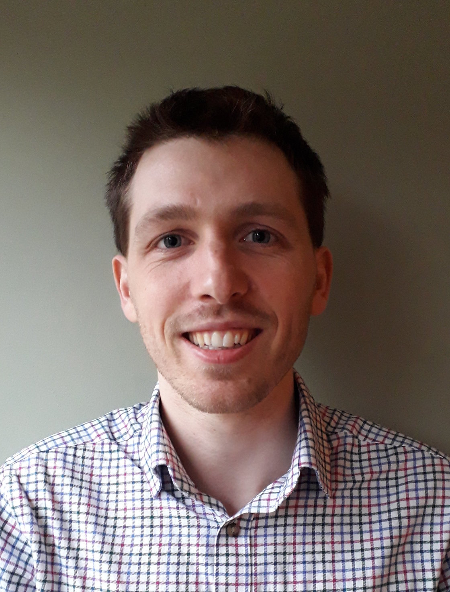

People

Dr Jack King
I am a
Royal Society University Research Fellow, working in the
School of Engineering at the University of Manchester. After an MEng at the University of Cambridge I completed my doctoral studies at the University of Edinburgh. I joined the University of Manchester as a post-doctoral research associate in 2017, and was awarded a Dame Kathleen Ollerenshaw Fellowship in 2022, and a Royal Society University Research Fellowship in 2023.

Ruofeng Feng
Ruofeng joined as a postdoctoral research associate in January 2024, and is developing new techniques for adaptivity in mesh-free combustion simulations, and researching bluff-body flame dynamics.
Lucas Gerken-Starepravo
Lucas started his PhD in September 2023, and is working on the development of machine learning techniques to accelerate mesh-free simulations of combustion phenomena.
Ben Cookman
Ben started his PhD in January 2024, and is conducting numerical and theoretical work on understanding the dynamics of flames in porous and confined geometries.
and more currently being recruited...